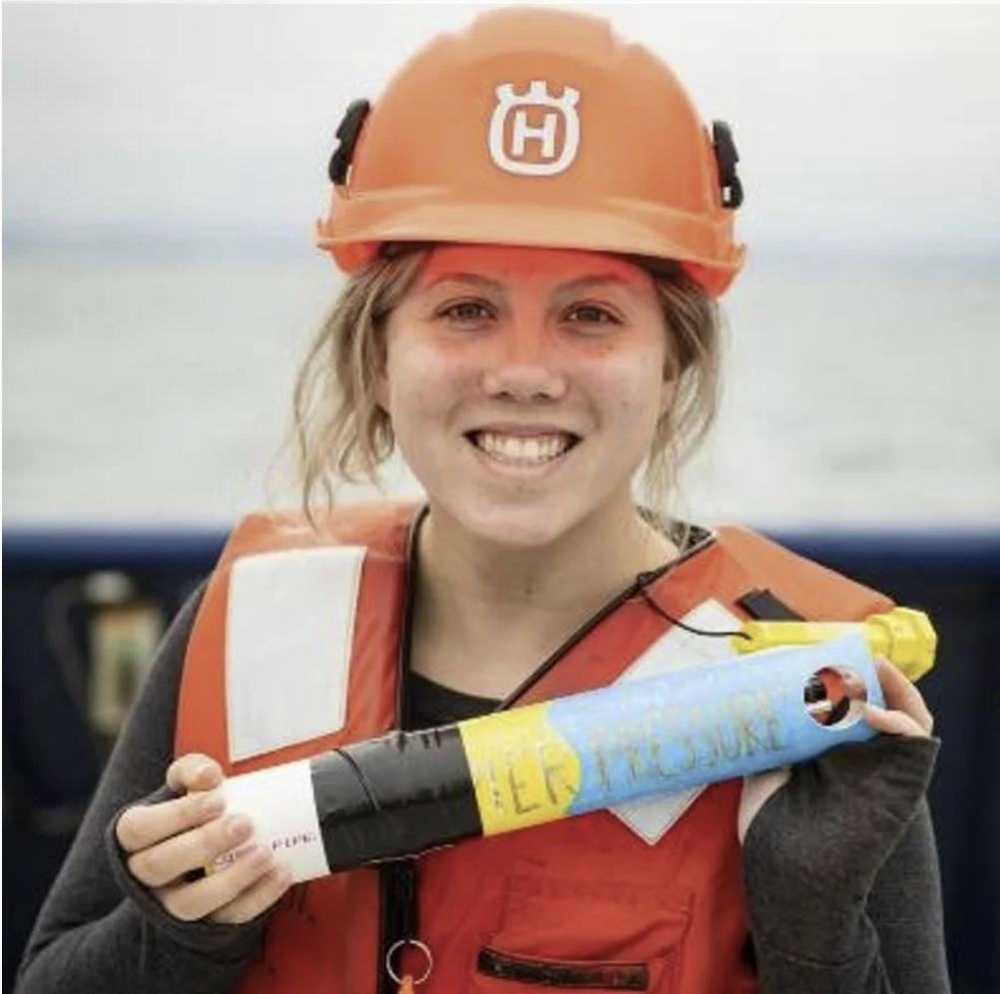

I am a post-master's researcher at Los Alamos National Lab working as part of the HiLat Project. My work focuses on using machine learning to understand links between atmospheric modes in the Northern Hemisphere and ocean heat transport into the Arctic Ocean.
Modification of North Atlantic Deep Water by Pacific/Upper Circumpolar Deep Water in the Argentine Basin published in GRL December 12, 2022.
2021-2023: Master's in Oceanography completed at University of Rhode Island with Drs. Kathleen Donohue and Randy Watts
06/20/21 - 08/20/21: Summer internship at Los Alamos National Laboratory with Drs. Wilbert Weijer and Milena Veneziani
12/7/20: Presented research at AGU 2020.
5/5/20: Scripps Spotlight on Sawyer Brand
2/19/20: I presented my research at the Ocean Sciences Meeting in San Diego. Link to poster here .
10/24/19: Speaker at SIO undergraduate meeting on research
9/24/19: Speaker at Welcome Week 2019 for incoming SIO transfers and freshmen
9/26/18: Speaker at Welcome Week 2018 for incoming SIO transfers and freshmen